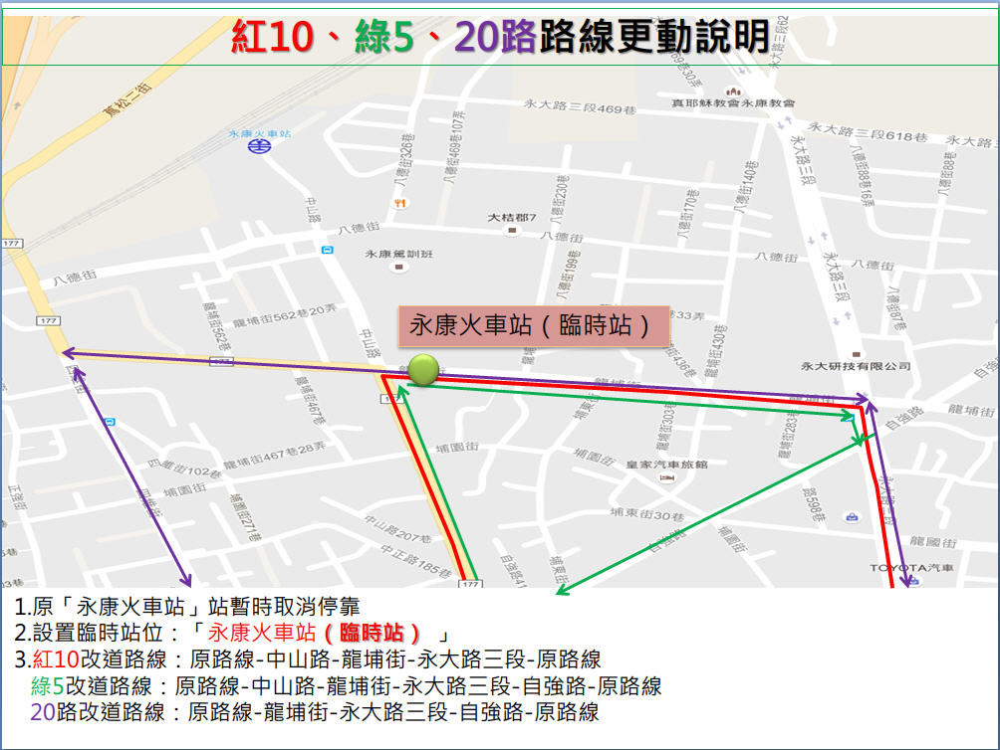

<!DOCTYPE html PUBLIC "-//W3C//DTD XHTML 1.0 Strict//EN" "http://www.w3.org/TR/xhtml1/DTD/xhtml1-strict.dtd">
<html xmlns="http://www.w3.org/1999/xhtml">
<head>
<meta http-equiv="Content-Type" content="text/html; charset=utf-8" />
<script type="text/javascript">
	route_name = '20路';
	route_name_en = 'No.20';
	route_file_name = 'city_bus_20';
	route_type = 'city_bus';
	route_interval = ['南紡購物中心','海東國小'];
</script>
<script src="../tools/web_model.js"></script> 
<script type="text/javascript">
	header_code();
</script>
</head>
<body>
<script type="text/javascript">
	block_header();
	block_route_map('臺南市政府水利局於106年07月27日至施工完成，進行「臺南市永康區八德街污水工程」交通管制，為配合工程20路「海東國小-永康火車站-南紡購物中心」、綠5「永康火車站-大社」、紅10「關廟-永康-奇美醫院」<span style="color: red; font-weight: bold">暫不停靠「永康火車站」招呼站</span>，請乘客至<span style="color: blue; font-weight: bold">臨時招呼站位</span>搭乘，改道路徑及臨時站位如圖所示：<br />');
	block_route_info(route_interval,'府城客運','尖30離60','兩段票 分段點：塭南里<br />緩衝區：安南醫院 ─ 嘉綠寶社區','http://www.2384.com.tw/ebus/jsp/ajaxBus.jsp?pathId=10020&locale=zh_TW');
	block_fare(2, null,'分段點：塭南里<br /><font color="#CC2102"><u>緩衝區：安南醫院－嘉綠寶社區</u></font><br /><font color="green">乘車起迄點跨越緩衝區以二段票收費</font>');
	block_time_schedule('南紡購物中心','海東國小','');
	block_transfer(transfer_kun_shan_university + transfer_yongkang_railway_station + transfer_yanhang + transfer_taiwan_history_museum + transfer_annan_hospital + transfer_haidong_elementary_school);
	block_copyright();
</script>
</body>
</html>